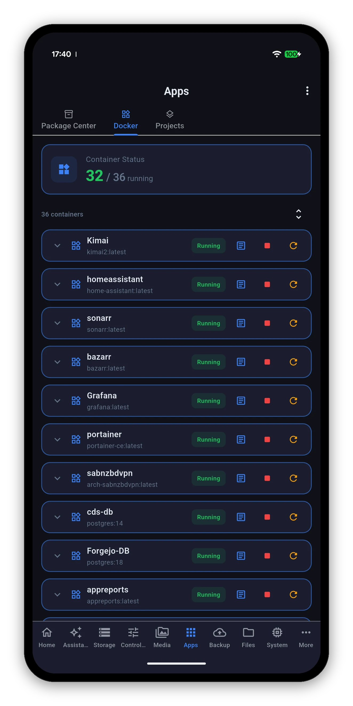

Syno Manager is an independent, native Android app for your Synology NAS. Live system, storage and network readings, Docker, cameras, photos, backups and files in one app, with resizable widgets, launcher shortcuts and an assistant that runs on the phone.

Every widget resizes wider or taller and picks the layout that fits. Each one shows when its numbers were taken.
Open any screen from a launcher shortcut or from Tasker, MacroDroid and other automation apps through synomanager:// links.
On a device with AICore and Gemini Nano, ask about your NAS in plain words. The model runs on the phone and works offline.
Start, stop and restart containers, read their logs, run Compose stacks, and install or update packages.
Send a link, magnet or .torrent to the NAS from your phone and watch it progress.
Credentials sit in the Keystore-backed store and are excluded from Android cloud backup and device transfer.
$9.99 once. No ads, no subscriptions, no in-app purchases. Needs a Synology NAS on DSM 7.0 or later.